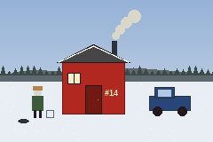
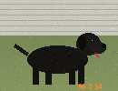

I will be adding more pictures when Tyler comes over
to scan them.
You are visitor number
since November 30, 1997
Sign my Guestbook | Read my Guestbook
Last updated January 9, 1999
This page hosted by GeoCities. Get your own Free Home Page

Hello and welcome to my home page. My name is Gordy Pfaff and I carried the mail in Fond du Lac for 31 years until I retired in 1995. Now I have time to fish and my grandson Tyler says I have to have a web page so here it is. It is my first one. He showed me how to do it with the Netscape but I am doing all the typing myself with two fingers so please excuse the mistakes.That is my shanty in the picture. It is #14 and it is painted
red so you can find it in a white out. I built it in 1984 out of
plywood and it has a little wood stove and two holes and a bench.
It has been on the lake every winter since except last year when the ice
never got good enough. Alot of people lost there shanties thru the
ice in 98, I was lucky.
| Date | Fish | How Many | Notes |
| 1/8/99 | Perch | 22 | Waxies. Most of them small, kept 9 |
| 1/8/99 | Walleye | 1 | 19 1/2 in. |
| 1/5/99 | Nothing | 0 | -18 in the morning. Didnt stay long. |
| 1/3/99 | Perch | 14 | Minnows |
I will put a picture of my 1991 fish here when I find it.

This is my dog Duke. He was a black lab and he came out on the ice with me for 11 winters. He died last March. Tyler scanned this picture for me, it is from 1996.
I will be adding more pictures when Tyler comes over
to scan them.
You are visitor number
since November 30, 1997
Sign my Guestbook | Read my Guestbook
Last updated January 9, 1999
This page hosted by GeoCities. Get your own Free Home Page